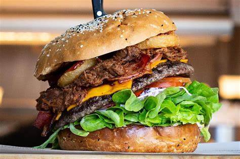

Hamburger

Close your eyes, and picture the perfect hamburger.
Is it a thin diner-style hamburger patty, or a thick steakhouse-sized burger? Seared to the peak of juiciness on a grill or in a flat griddle
- Ground chuck
- Crushed crackers
- Worcestershire sauce
- Egg
- First, set out a large mixing bowl and add in the ground beef, crushed crackers, egg, Worcestershire sauce, milk, and spices.
- Next, press the meat down in the bowl, into an even disk. Use a knife to cut and divide the hamburger patty mixture into 6 – 1/3 pound grill or skillet patties, or 12 thin griddle patties. Like so:
- Set out a baking sheet, lined with wax paper or foil, to hold the patties. One at a time, gather the patty mix and press firmly into patties of your desired thickness. You typically want hamburger patties to be slightly larger than the buns they’ll be served on since they’ll shrink a bit in the cooking process.